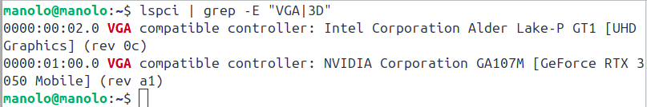
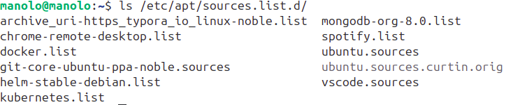
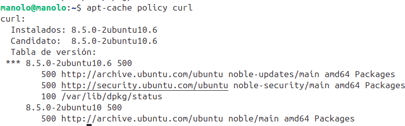
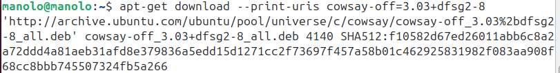

4ª Practica Guiada (Uso de APT avanzado)
INDICE¶
A lo largo de esta práctica guiada, los puntos 1,2,4,y 7 serán los teóricos, de ellos, no hay que entregar nada. Solo se entregarán los puntos 3,5 y 6, en su totalidad y con capturas de pantalla. A continuación, se muestra el índice:
1. ¿Qué es un paquete en Linux?
1.1 Ejemplos concretos de paquetes
1.2 ¿De dónde vienen los paquetes? (Repositorios)
1.3 Tags de los repositorios en Ubuntu (Types, URIs, Suites, Components, Signed-By)
1.4 Índices de un repositorio: cómo busca APT los paquetes
1.5 Ver paquetes candidatos a instalar con apt-cache policy
1.6 ¿Qué paquete instala APT? Orden de prioridades
2. Uso de las herramientas APT y DPKG
2.1 Instalar paquetes con APT y DPKG (dpkg -i') y resolver paquetes incompletos (apt -f install)
2.2 Instalar paquetes manualmente con DPKG y curl
2.3 Ver paquetes instalados y dependencias (apt list, dpkg -l, apt-cache depends)
2.4 Eliminar paquetes y archivos residuales (remove, purge, autoremove)
2.5 Ejemplo práctico completo con el paquete cowsay
3. Práctica con APT y DPKG
Parte 1: ejercicio completo con el paquete neofetch
Parte 2: ejercicio completo con el paquete python3
Parte 3: instalación manual de Docker descargando paquetes .deb y eliminación posterior
4. Añadir nuevos repositorios a Ubuntu
4.1 Here documents
4.2 El comando tee y el uso de pipes
4.3 Añadir la clave GPG de un repositorio y explicación del proceso
4.4 Añadir un repositorio externo (ejemplo: Docker)
5. Práctica: repositorios externos
a) Añade y muestra información del repositorio Docker (Punto anterior)
b) Descargar y añadir clave GPG de Microsoft
c) Crear el archivo vscode.sources con tee y here-document
d) Actualizar índices (apt update)
e) Buscar e instalar el paquete code
6. Práctica: desinstalación completa de Typora
a) Eliminar paquete + configuración + dependencias
b) Eliminar ficheros de repositorios de Typora
c) Eliminar claves GPG de Typora
d) Explicar línea por línea la instalación de Typora y reproducirla con here-document
e) Identificar URI, Suites y Components en el repositorio de Typora
7. Aislar programas por usuario
7.1 Editar permisos del binario
7.2 Crear grupos para restringir acceso
Visto el índice, empezamos a desarrollar cada uno de los puntos:
1. ¿Qué es un paquete en Linux? (explicación sencilla)¶
Un paquete de linuz es un archivo que contiene cualesquiera de las siguientes características: un programa, una biblioteca de comandos, configuraciones o incluso documentación.
Todo este "paquete" está comprimido de forma ordenada, para que el sistema lo pueda instalar, actualizar o eliminar fácilmente mediante una serie de comandos que veremos a lo largo de la práctica. De hecho, para entender mejor el concepto de "paquete" en linux, es conveiniente pensar que es parecido a una “caja”, que contendrá todo lo necesario para que un programa funcione.
En Ubuntu y Debian, los paquetes siempre tienen extensión: .deb
1.1 Ejemplos concretos de paquetes¶
a) Un programa completo instalando un programa¶
Ejemplo de programa: Firefox. Para instalar el programar firefox en ubuntu debemos de hacer uso de un paquete llamado: firefox. Cuando lo instalas, recibes todo lo necesario para que firefox funciones, como por ejemplo:
- el navegador
- sus archivos internos
- iconos
- dependencias necesarias
Para instalar firefox en tu ubuntu, simplemente escribe:
sudo apt install firefox
b) Una biblioteca que otros programas necesitan¶
Los paquetes no tienen porqué ser programas como el ejemplo anterior, pueden ser librerías que otros programas necesiten, como por ejemplo el paquete llamado "curl":
curl
Con este parquete dispondrás de una herramienta muy práctica para realizar solicitudes HTTP y HTTPS desde la terminal, como por ejemplo, el siguiente
curl -v https://www.google.com
c) El controlador de tu grafica¶
sudo apt update
sudo apt install ubuntu-drivers-common
Es un paquete que instala el driver automáticamente de tu tarjeta gráfica haciendo
sudo ubuntu-drivers autoinstall
Otro ejemplo es el siguiente:
sudo apt update
sudo apt install nvidia-driver-535
Es un paquete que instala el driver automáticamente de una gráfica que tu indiques. Si quieres saber un poquito más, tu gráfica puedes verla con el siguiente comando:
lspci | grep -E "VGA|3D"
que te da el nombre de tu grafica:

Si quieres saber cómo encontrar el driver que debes instalar para tu gráfica, debes ejecutar:
sudo ubuntu-drivers list
Que te da como salida automáticamente todos los drivers compatibles con tu grafica. De hecho, el comando me dirá el recommended. Los drivers de NVIDIA en Ubuntu no vienen del repositorio de NVIDIA, sino de repositorios oficiales de Ubuntu mantenidos por Canonical. Esto lo entenderás en puntos posteriores.
Doc oficial: https://documentation.ubuntu.com/server/how-to/graphics/install-nvidia-drivers/?utm_source=chatgpt.com
1.2 ¿De dónde vienen los paquetes?¶
Cuando haces:
sudo apt install firefox
se instala un paquete que se llama firefox, pero os dejo las siguientes dos preguntas:
- ¿Cómo sabes que el paquete se llama firefox y no firefox_linux?
- ¿De donde se está descargando realmente ese paquete?
Contestemos primero a la segunda pregunta. Los paquetes se descargan de lugares llamados repositorios, que son “tiendas” donde se guardan miles de paquetes listos para instalar. El comando APT se encarga de: descargar, instalar, actualizar, y borrar los paquetes de dicho respositorios (que debremos de configurar a mano, a menos que sea el oficial que trae el sistema).
En este línea, debéis saber Ubuntu trae varios repositorios oficiales y cada repositorio contiene miles de paquetes listos para instalar (entre ellos, los paquetes firefox y curl instalados en el punto anterior). El comando para mirar todos los repositorios de vuestro sistema es.
ls /etc/apt/sources.list.d/

Esta carpeta contiene todos los repositorios añadido en vuestro sistema, que como hemos dicho, son los lugares en donde se buscan los paquetes "deb" cuando hacemos "apt install". Ahora bien, en la captura anterior hay dos repositorios que trae ubuntu por defecto al instalarse, y son:
ubuntu.sources
ubuntu.sources.curtin.orig
El resto de respositorios son repos que YO he añadido a mano y por tanto, no tendréis vosotros.
1.3 TAGS de los repositorios en ubuntu
De hecho, vamos a hacer un poco de "spoiler" y vamos a adentrarnos en el repo oficial de ubuntu (ubuntu.sources) haciendo un cat a dicho archivo:
sudo cat /etc/apt/sources.list.d/ubuntu.sources
#------------------SALIDA DEL CAT-----------------------
Types: deb
URIs: http://archive.ubuntu.com/ubuntu/
Suites: noble noble-updates noble-backports
Components: main restricted universe multiverse
Signed-By: /usr/share/keyrings/ubuntu-archive-keyring.gpg
Architecture: amd64
Types: deb
URIs: http://security.ubuntu.com/ubuntu/
Suites: noble-security
Components: main restricted universe multiverse
Signed-By: /usr/share/keyrings/ubuntu-archive-keyring
Architecture: amd64
Aquí, se indica que el sistema descargará los paquetes de tipo "DEB" desde dos lugares principales: archive.ubuntu.com, que es el repositorio general, y security.ubuntu.com, que es el repositorio específico para actualizaciones de seguridad. Vamos a entender un poquito más qué significa cada cosa.
Además, se especifican varias etiquetas como: suites, URIS, Componentes y Signed By. La siguiente imagen resumen un poco lo que vamos a ver paso a paso:

Es decir, dentro de un mismo repositorio, clasificamos a los paquetes de la siguiente forma:
a) URIs¶
Este es la URL del servidor o repositorio desde donde Ubuntu descarga los paquetes, se puede entender como el repositorio en sí mismo.
b) Suite¶
La suite es una “estantería” del repositorio (de la URL) donde viven versiones específicas de los paquetes.
-
noble, es la base de tu versión de Ubuntu. Contiene los paquetes tal y como fueron publicados en la versión inicial del sistema, justo el día del lanzamiento. Son los paquetes "congelados" en su versión inicial y que garantizan estabilidad. -
noble-updates, aquí se incluyen actualizaciones estables que se liberan después del lanzamiento de Ubuntu. Correcciones de errores, mejoras menores y pequeñas actualizaciones que han sido probadas en los paquetes para garantizar que no rompan el sistema. noble-backports, esta suite sirve para ofrecer versiones más nuevas de ciertos paquetes que no forman parte de la versión oficial inicial ni de las actualizaciones típicas. No es obligatoria y suele usarse para introducir versiones más recientes que pueden llegar a ser inestables-noble-security, contiene todas las actualizaciones y parches de seguridad que Ubuntu publica de forma prioritaria. Aquí es donde se suben las correcciones de vulnerabilidades del kernel, OpenSSL, navegadores o librerías importantes. Posteriormente se suelen copiar en noble updates.
c) Components¶
Las son distintas secciones dentro de un repositorio que dividen alos paquetes entre categorías:
| Componente | Contenido |
|---|---|
| main | Software oficial apoyado por Ubuntu |
| restricted | Drivers propietarios (como NVIDIA) |
| universe | Software mantenido por la comunidad |
| multiverse | Software con licencias restrictivas |
1.4 Índices de un repo: Instalando curl en Ubuntu 24.04 (Noble)¶
Imagina que ejecutas:
sudo apt update
sudo apt install curl
Primero apt mira en los índices que se descargaron con apt update. APT no descarga todos los .deb directamente. En su lugar descarga archivos llamados índices. Estos índices son listados completos de todos los paquetes de un repositorio y se encuentran en:
/var/lib/apt/lists/
Sin embargo, por cada repo puede existir más de un índice. Cada repo aporta a /var/lib/apt/lists/ tantos índices como combinaciones de: suite, componente y arquitectura. Por ejemplo, si tengo el repo:
URIs: http://archive.ubuntu.com/ubuntu
Suites: noble noble-updates noble-security
Components: main universe
Arquitectura: amd64
APT tendrá que descargar: 3 suites × 2 componentes × 1 arquitectura = 6 índices diferentes, que aparecerán al hacer un ls a /var/lib/apt/lists/
archive.ubuntu.com_ubuntu_dists_noble_main_binary-amd64_Packages
archive.ubuntu.com_ubuntu_dists_noble_universe_binary-amd64_Packages
archive.ubuntu.com_ubuntu_dists_noble-updates_main_binary-amd64_Packages
archive.ubuntu.com_ubuntu_dists_noble-updates_universe_binary-amd64_Packages
archive.ubuntu.com_ubuntu_dists_noble-security_main_binary-amd64_Packages
archive.ubuntu.com_ubuntu_dists_noble-security_universe_binary-amd64_Packages
Lo anterior pasa en cualquier repositorio añadido, no solo con los oficiales.
Ahora bien, Cuando haces apt install "paquete", APT mira en todos los índices de /var/lib/apt/lists/ y busca en cada uno de ellos una entrada llamada “Package: curl”. De todos los paquetes curl, APT elige qué paquete instalar según un orden predefinido, que explicamos en el siguiente punto.
1.5 Ver info de los posibles candidatos a la hora de instalar un paquete:¶
En el punto anterior nos quedamos en qué paquete de todos los posibles se va a instalar en el sistema, la pregunta es, ¿Puedes ver todos los posibles candidatos? Esto se puede ejecutando:
apt-cache policy curl
que te podría devolver algo así;

Explicamos las líneas anteriores, ya que son importantísimas ya que todas contienen el capo "prioridad":
a) Instalados: 8.5.0-2ubuntu10.6¶
Esto significa que esa es la versión que ya tienes instalada en tu sistema.
b)Candidato: 8.5.0-2ubuntu10.6¶
Es la versión que APT instalaría si ejecutarás un upgrade. Aquí coincide con la instalada luegono hay una versión más nueva.
c)Tabla de versión:¶
Aquí APT lista todas las versiones disponibles en tus repositorios y de dónde provienen. Vamos línea por línea.
d) Línea marcada con ***¶
La linea que tiene esto
*** 8.5.0-2ubuntu10.6 500
marca la versión instalada actualmente. El número 500 es la prioridad de paquete en cuestión (la 500 es alta y es normal en repos oficiales). Esta versión aparece dos veces debajo:
500 http://archive.ubuntu.com/ubuntu noble-updates/main
500 http://security.ubuntu.com/ubuntu noble-security/main
Que significa: que esa misma versión está publicada tanto en noble-updates como en noble-security. Ya avanzamos en el punto 1.3 que es totalmente normal cuando ubuntu lanza un parche de seguridad y luego lo copia también en el repo updates.
e) 100 /var/lib/dpkg/status¶
100 /var/lib/dpkg/status
Ese 100 es la prioridad interna que APT asigna a las versiones que ya están instaladas en el sistema./var/lib/dpkg/status es el fichero donde dpkg guarda el registro local de todos los paquetes instalados en tu sistema: Este archivo contiene, para cada paquete instalado toda la info necesaria.
f) Versión anterior: 8.5.0-2ubuntu10¶
8.5.0-2ubuntu10 500
500 http://archive.ubuntu.com/ubuntu noble/main
Esto muestra la versión original que venía en la instalación base de Ubuntu (noble/main). Evidentemente tiene un número más bajo: 2ubuntu10 vs 2ubuntu10.6. APT no la usa porque ya existe una versión más nueva en updates/security.
1.6 ¿Qué paquete de los candidatos anteriores instalamos?¶
APT nos dice directamente con el comando anterior quién es el primer candidato a instalar, aún así, debéis saber que la jerarquía para elegir que paquete instalar es la siguiente:
1. Prioridad numérica
2. Suite (security > updates > release base)
3. Componente (main > universe > multiverse…)
4. Versión
O dicho de otra forma:
- Primero la prioridad numérica (dos posibles resultados) Ej.: 500 http://archive.ubuntu.com/ubuntu noble-updates/main amd64 Packages
Ej.: 500 http://security.ubuntu.com/ubuntu noble-security/main amd64 Packages
-
Este repositorio puede tener varias Suite. Si hay varios candidatos con la misma prioridad en el punto anterior, se prioriza en el siguiente orden (security > updates > release base > backports). En el ejemplo anterior, ganaría la versión del repo "security" aunque tengan igual prioridad ambas
-
Cada Suite tiene distintos componentes. Si a este paso llegaramos con varios candidatos, filtraríamos en el siguiente orden (main > universe > multiverse…)
-
Version: Si en este último paso, tuvieramos todavía más de un candidato, nos quedaríamos con el de la versión mas reciente
2 Uso de la herramienta APT y DPKG para paquetes¶
Veremos ahora los comandos de APT y DPKG más comunes para instalar y eliminar paquetes de forma correcta.
2.1 Instalar paquetes con APT y soluciones paquetes medio instalados¶
Como regla general. importantísimo actualizar los índices con:
sudo apt update
antes de instalar cualquier paquete. Después, podemos hacer una pequeña búsqueda para ver si el paquete está disponible. Por ejemplo, si hacemos:
sudo apt search cowsay

Me sale que puedo instalar 4 posibles paquetes y uno que tengo uno ya instalado. Dicho esto, con APT podemos: Instalar (según el orden visto en el punto 1):
sudo apt install nombre
De esta forma se instalarán todas las dependencias automáticas de dicho paquete. A la hora de instalar u paquete también es común encontrarse directamente el paquete ".deb", descargarlo e instalarlo a mano, pero esto trae algunas desventajas. Imagina que tras hacer:
sudo apt search cowsay
te ha molado un paquete que es cowsay-off, y lo quieres instalar a mano, ya que apt no te lo ha instalado por defecto (aunque esto sería raro). Para instalar ese paquete en específico debes buscar primero donde está ese .deb, por ejemplo, haciendo:
apt-get download --print-uris cowsay-off=3.03+dfsg2-8
que devuelve algo como:

que nos otorga la url para descargar el paquete .deb. una vez descargado el paquete .deb se instala haciendo uso de:
dpkg -i archivo.deb
En el siguiente punto lo vemos más en detalle. ¿Qué hace DPKG cuando isntalas un paquete a mano sin APT como en lo anterior?: instala el paquete, crea su entrada en /var/lib/dpkg/status
marca el paquete como instalado manualmente
- NO resuelve dependencias y NO registra dependencias automáticas
Es decir, si el paquete va por si solo guay, pero si tiene dependencias para poder funcionar, quizás no funcione. De hecho, si instalas un .deb con dependencias, el paquete puede quedar: en estado half-installed (en el punto 2.3 verás como ver si un paquete está half installed). Para arreglarlo, se ejecuta:
sudo apt -f install
Este comando hace que APT inspeccione los paquetes que han quedado a medio instalar y descargue e instale las dependencias que falten desde los repositorios configurados. En general, siempre que instales paquetes manualmente con dpkg -i, es recomendable ejecutarlo después:
2.2 Instalar paquetes con DPKG y curl.¶
Hay veces que sabemos solo la url donde descargar el paquete.
Vamos a utilizar primero un comando que nos descargue, directamente de una URL de internet, un paquete, para posteriormente instalarlo a mano con dpkg, es decir, bajo ningún concepto estamos utilzando repositorios de uibuntu (y por tanto estamos haciendo una mala práctica).
En primer lugar, descargamos un paquete .deb, al que con la opcion -o pondremos el nombre: vscode.deb
curl -L -o vscode.deb https://update.code.visualstudio.com/latest/linux-deb-x64/stable
la opción -L es para que siga reedirecciones y es muy importante dejarla puesta cada vez que se a descargar un paquete en internet.
De hecho, lo anterior es equivalente a utilizar un wget (os sonará de la primer aclase cuando descargamos la iso de ubuntu):
wget -O vscode.deb https://update.code.visualstudio.com/latest/linux-deb-x64/stable
Posteriormente, se instala el paquete con la herramienta dpkg:
sudo dpkg -i vscode.deb
Al ejecutarlo os sladrá esto:
 Y, por último, tal y como avancé en el apartado anterior, se resuelven dependencias:
Y, por último, tal y como avancé en el apartado anterior, se resuelven dependencias:
sudo apt -f install
De esta forma, habéis instalado un paquete de forma manual.
2.3 Ver paquetes instalados o desistalados así como las dependencias de paquetes instalados.¶
Para ver si un paquete está instalado:
apt list --installed | grep nombre-del-paquete
que busca entre todos los paquetes instalados aquellos que contengan la palabra "curl" dentro de ellos. La salida del comando anterior es la siguiente:

Los que pone " [instalado, automático]" son aquellos paquetes que se instalaron automáticamente como dependencias del primero de los paquetes. En general, para ver las dependencias de un paquete específico, se usa:
sudo apt-cache depends nombre-del-paquete
Con curl, tendríamos:
sudo apt-cache depends curl
que nos devuelve:

Con dpkg se puede hacer lo mismo, sin embargo, debes de poner el nombre exacto del paquete, cosa que con apt no era necesaria. Para ver si un paquete está instalado con dpkg, ejecuta:
dpkg -l nombre-del-paquete
Por ejemplo:
dpkg -l curl
devuelve:
ii curl 8.5.0-2ubuntu10.6 amd64 command line tool...
La clave primera puede ser:
Primera letra (Desired state):
- i = Install
- r = Remove (el usuario pidió eliminarlo, pero sin borrar configuraciones)
- p = Purge (el usuario pidió borrarlo todo: paquete y configs)
- u = uninstalled (el paquete se requiere desinstalado)
Segunda letra (Current state):
- i = Installed
- c = Config-files (solo quedan archivos de configuración)
- n = Not-installed
- u = Unpacked
- f = Half-configured
Ojo, en ningún caso nos dirá si sus dependencias se han desinstalado o no. En caso de no aparecer nada es que el paquete se ha desinstalado correctamente.
Si no quieres que se tenga que poner el nombre exacto del paquete recomiendo usar:
dpkg -l | grep 'nombre del paquete'
Que sería parecido a:
apt list --installed | grep nombre-del-paquete
del principio.
2.4 Eliminar paquetes instalados y toda su información residual.¶
Para eliminar un paquete instalado, usa:
sudo apt remove curl
Esto:
- elimina los archivos binarios del paquete
- mantiene sus archivos de configuración en
/etc - NO elimina dependencias automáticas, incluso si ya no se usan
- el sistema conserva su configuración si lo reinstalas
De hecho, si ejecutas apt remove (no purge), el sistema deja el paquete en estado: "rc" al mirarlo con:
dpkg -l curl
tal y como haciamos en el punto anterior. Si también quieres eliminar las configuraciones del paquete usa:
sudo apt purge nombre-del-paquete
Esto borra: binarios, configuraciones en /etc y ficheros de estado internos del paquete
Sin embargo, lo anterior no elimina las dependencias del paquete y para ello, hay que hacer:
sudo apt autoremove
Este comando elimina: todas las dependencias marcadas como Auto-Installed: 1 y siempre que ningún otro paquete dependa de ellas.
2.5 Un ejemplo de casi todo lo anterior con el paquete cowsay¶
Vemos un poco de todo lo anterior a través del siguiente ejemplo;
a) Buscar el paquete¶
Imaginamos que quiero instalar un paquete llamado "cowsay", pero no sé si está disponible en mi sistema para ser instalado, así que hago:
apt search cowsay
y observo que sí está! Luego al estar en mis repositrorio oficial de ubuntu, lo puedo descargar si problema.
b) Ver detalles del paquete¶
Después vamos a ver la info de cowsay:
sudo apt show cowsay
Nos devuelve algo como:
Package: cowsay
Version: 3.03+dfsg2-8
Priority: optional
Section: universe/games
Origin: Ubuntu
Maintainer: Ubuntu Developers <ubuntu-devel-discuss@lists.ubuntu.com>
Original-Maintainer: James McDonald <james@jamesmcdonald.com>
Bugs: https://bugs.launchpad.net/ubuntu/+filebug
Installed-Size: 93,2 kB
Depends: libtext-charwidth-perl, perl:any
...
Aquí vemos la parte importante: Dependencias:
perl(si no lo tienes ya instalado, APT lo añadirá)
c) Actualizar la lista de paquetes¶
Siempre antes de instalar un paquete nuevo
sudo apt update
d) Instalar el paquete + sus dependencias¶
sudo apt install cowsay
Salida típica:
Se instalarán los siguientes paquetes NUEVOS:
cowsay perl
e) Ejecutar el programa¶
En bash, escribe:
cowsay Hola soy manolo
f) Eliminar el paquete¶
sudo apt remove cowsay
Esto quita el programa, pero NO elimina las dependencias huérfanas.
g) Limpiar dependencias huérfanas¶
sudo apt autoremove
Esto elimina dependencias sobrantes, en eeste caso, PEARL
3-Práctica¶
Ahora tú vas a hacer lo mismo, pero con otro paquete: neofetch (Aportando capturas de pantalla)
Parte 1: Realiza estos pasos en tu Ubuntu:
1) Buscar el nombre exacto del paquete para ver si coincide con el que te doy. Usa el comando de apt correspondiente para ver la prioridad del o de los que te salgan (usar apt-cache policy). 2) Ver detalles del paquete (usar apt show). 3) Mirar las dependencias del paquete (apt-cache dependencies). 4) Antes de instalar, actualiza la lista de paquetes. 5) Instala el paquete anterior con el comando de apt correspondiente y con la opción -y para que las dependencias se instalen de forma automática. 6) Ejecuta la utilidad neofetch, para comprobar que todo ha funcionado correctamente 7) Con dpkg -l, comprueba el estado del paquete. 8) Después, eliminalo con el comando remove. 9) Con dpkg -l, comprueba el estado del paquete, ¿Qué conclusión sacas? ¿haría falta un apt purge del paquete anterior? 10) Por último, y como buena práctica, ¿qué deberíamos hacer para eliminar todas las dependencias huérfanas del sistema?
Parte 2: Ahora del paquete python3, responde a las siguiente preguntas:
-
Con el comando de apt correspondiente, comprueba si ya tienes algun paquete con algún nombre parecido instalado. Si quiero ver exactamente si ese paquete está instalado, ¿qué comando debo usar?
-
¿Cuanto paquetes distintos te salen al hacer un apt search? ¿Porqué tantos?
-
Con apt cache, determina cual es el siguiente paquete candidato a ser instalado y determina el porqué, mirando tanto la prioridad como la suite.
-
Mirar las dependencias del paquete si usar el apt show.
-
Antes de instalar, actualiza la lista de paquetes.
-
Si no lo tienes instalado (o aunque lo tengas) pon y ejecuta el comando que Instala el paquete anterior con el comando de apt correspondiente y con la opción -y para que las dependencias se instalen de forma automática.
-
Escribe en la terminal python3, para comprobar que todo ha funcionado correctamente. después escribe:
print "hola mundo"
-
Con dpkg -l, comprueba el estado del paquete.
-
Después, elíminalo con el comando remove, ¿te deja?, ¿Qué crees que pasa en este caso?
Parte 3: A continuación, instala los siguientes paquetes a mano haciendo un curl de cada uno de ellos:
https://download.docker.com/linux/ubuntu/dists/noble/pool/stable/amd64/containerd.io_1.7.27-1_amd64.deb
https://download.docker.com/linux/ubuntu/dists/noble/pool/stable/amd64/docker-ce-cli_28.4.0-1~ubuntu.24.04~noble_amd64.deb
https://download.docker.com/linux/ubuntu/dists/noble/pool/stable/amd64/docker-ce_28.4.0-1~ubuntu.24.04~noble_amd64.deb
https://download.docker.com/linux/ubuntu/dists/noble/pool/stable/amd64/docker-buildx-plugin_0.28.0-0~ubuntu.24.04~noble_amd64.deb
https://download.docker.com/linux/ubuntu/dists/noble/pool/stable/amd64/docker-compose-plugin_2.39.4-0~ubuntu.24.04~noble_amd64.deb
-¿Qué comando de apt debes ejecutar después como buenas práctica por si faltan dependencias de los paquetes anteriores?
-Comprueba los nombres de los paquetes instalados usando algún comando de apt o dpkg:
-Elimina cada uno de los paquetes anteriores con la opcion -r en vez de -i de dpkg. ¿Que diferencia hay con los nombres de los archivos al poner -r en vez de -i?
- Con dpkg, comprueba el estado del paquete antes de eliminarlo.
- Si hubo problemas, intenta eliminarlos con apt remove
- Si haz necesitado del paso anterior, con dpkg, comprueba el estado del paquete después de eliminarlo.
-
¿Qué comando debes usar para eliminar archivos de config residuales? ¿Los hay en este caso?
-
¿Qué comando debes usar para eliminar dependencias huérfanas despues de eliminar a mano los paquetes anteriores?
- Comprueba que no queden residuos de los paquetes desinstalados.
4 Añadir nuevos repositorios a Ubuntu¶
Pienso que lo siguiente se entiende mejor con un ejemplo. En el punto 1.2 vimos todos los remos que yo tenían en mis sitema, haciendo:
ls /etc/apt/sources.list.d/
Ahora bien ¿Para que quiero añadir un repositorio? Es posible que el repo oficial de ubuntu no distribuya software específico (como docker). Sin embargo, es posible que docker tenga un repositorio oficial a través del cual podré instalar su paquetes con el comando apt. Sin embargo, tengo primero que añadirlo y certificar de alguna forma que este repo es oficial.
Para esto, no hay una guía específica, pero si es cierto que se suelen seguir una serie de pasos predefinidos, cuyos comandos pueden cambiar. Para entender el punto 4.2, necesitaremos un concepto previo de comandos en el 4.1
4.1 Here document¶
En primer lugar, os invito a escribir "cat " en la terminal y posteriormente, escribir algo y pulsar enter. Lo que pasa es que "cat", imprime de vuelta lo que hayas escrito.

En este ejemplo, yo escribí hola y me respondió lo mismo, como era de esperar. Ahora bien, cuando en el examen anterior creábamos archivos con cat lo que hacíamos realmente era redirigir la salida de nuestro cat a un archivo de texto. Es decir, al hacer "cat hola" hemos visto que nos devolvía hola por pantalla. Al juntar cat con ">>" ya nos devuelve lo mismo que escribimos por pantalla sino que eso que escribimos se redirije al archivo ejemplo.txt, tal y como pasa en el siguiente ejemplo.

En lo anterior, no hay nada nuevo que no sepas. Lo nuevo viene ahora. Un "here document" es una construcción de la consola que permite suministrar un bloque de texto completo como entrada estándar a un comando. Por ejemplo, al escribir cat en la consola hemos visto que se queda esperando a que le pasemos texto, por tanto, esa es la "entrada estándar" del cat. Siguiendo con la explicación de un here document, podemos suministar un bloque de texto a cat sin necesidad de escribir ese texto manualmente o de guardarlo en un archivo temporal. Esto se hace con la sintásis;
cat <<EOF
Usuario: $USER Fecha: $(date)
EOF
En la práctica el comando anterior funciona como si estuvieras escribiendo a mano ese texto. ya que, si haces cat <<EOF, la shell entiende que todo lo que escribas hasta volver a ver la palabra EOF debe enviarlo a cat.
4.2 El comando tee y el uso de pipes¶
Primero tenemos que entender el comando tee. Si en terminal yo escribo:
sudo tee hola.txt
y justo después de pulsar enter escribo "hola" en la terminal y cierro con Cntrl+C, lo anterior es equivalente al comando:
sudo echo "hola" > hola.txt
pero el primer comando evita problemas de permisos que podríamos tener en el archivo hola.txt si llegara a ser de root. Ahora bien, el uso del primer comando + escribir "hola" en terminal justo después, es quivalente a esto:
echo "hola" | sudo tee hola.txt
Que nos devuelve "hola" en pantalla y mete "hola" en hola.txt. De hecho, podemos reescribir el comando anterior así:
echo "hola" | sudo tee /root/archivo > /dev/null
Y así evitamos que nos devuelva "hola" por pantalla y sólo lo meta en el txt. En el comando anterior aparece por primera vez el símbolo | también denominado como pipe o tubería. Lo único que hace es pasar la salida de echo "hola" a sudo tee /root/archivo y así no tenemos que escribir a mano "hola" en la terminal después de escribir: sudo tee hola.txt. Por último, el último comando (el de la tubería), es equivalente a:
sudo tee /root/archivo > /dev/null <<EOF
hola
EOF
4.3 Añadir la clave del repositorio¶
APT solo confía en un repositorio si puede verificar que la información que recibe está firmada con una clave GPG oficial del proveedor. Con la firma GPG, APT puede comprobar que la lista de paquetes procede realmente del proveedor legítimo y no ha sido alterada en el camino. Sin esta clave, APT directamente se negaría a usar ese repo. En el caso de Docker y otros muchos, la mayoría de creadores de software, publican su clave oficial en su página de repositorios:
https://docs.docker.com/engine/install/ubuntu/#install-using-the-repository

De hecho, el propio Docker nos otorga estas instrucciones
# Add Docker's official GPG key:
sudo apt update
sudo apt install ca-certificates curl
sudo mkdir -p /etc/apt/keyrings
sudo chmod 755 /etc/apt/keyrings
sudo curl -fsSL https://download.docker.com/linux/ubuntu/gpg -o /etc/apt/keyrings/docker.asc
sudo chmod +r /etc/apt/keyrings/docker.asc
# Add the repository to Apt sources:
sudo tee /etc/apt/sources.list.d/docker.sources > /dev/null <<EOF
Types: deb
URIs: https://download.docker.com/linux/ubuntu
Suites: $(. /etc/os-release && echo "${UBUNTU_CODENAME:-$VERSION_CODENAME}")
Components: stable
Signed-By: /etc/apt/keyrings/docker.asc
EOF
sudo apt update
sudo apt install docker-ce docker-ce-cli containerd.io docker-buildx-plugin docker-compose-plugin
Vamos paso a paso para entender lo que pasa aquí:
-sudo apt install ca-certificates curl: Ambos paquetes (curl y el otro) son esenciales si vas a añadir repositorios externos, descargar claves GPG o consumir APIs desde línea de comandos.
-sudo curl -fsSL https://download.docker.com/linux/ubuntu/gpg -o /etc/apt/keyrings/docker.asc: curl usa aquí las opciones fsSL. Con la opción -f, nos aseguramos que no se guardará basuara en caso de fallar, con la opción S muestra errores, y con la L, sigue redirecciones. La opción s minúscula no tiene porqué ponerse. La opción -o indica donde guardar el archivo.
-sudo tee /etc/apt/sources.list.d/docker.sources > ...
Por el punto anterior vimos que este comando es quivalente a:
echo "Types: deb
URIs: https://download.docker.com/linux/ubuntu
Suites: $(. /etc/os-release && echo "${UBUNTU_CODENAME:-$VERSION_CODENAME}")
Components: stable
Signed-By: /etc/apt/keyrings/docker.asc" \
| sudo tee /etc/apt/sources.list.d/docker.sources > /dev/null
que no es más que meter toda esa info dentro del archivo "/etc/apt/sources.list.d/docker.sources".
5-Práctica¶
a) Sobre el ejemplo anterior, añade y muestra en pantalla la información del repositorio de docker.
b) Descarga la clave de https://packages.microsoft.com/keys/microsoft.asc gpg y añadela /etc/apt/keyrings/microsoft.asc dandole permisos de lectura a este archivo.
c) Utilizando el comando tee y un "here document", añade a este repositorio a la carpeta adecuada, llamado: vscode.sources.
Types: deb
URIs: https://packages.microsoft.com/repos/code
Suites: stable
Components: main
Signed-By: /etc/apt/keyrings/microsoft.asc
d) Realiza un update del sistema para ver si está todo correcto,
e) Busca con apt que el paquete code está disponible. Posteriormente, instálalo.
6-Práctica¶
a) Desinstala el paquete de typora quitando toda la configuracion o dependencias y comprobando que, efectivamente, no dejas nada.
b) Después, vamos a ir un poco mas allá y vas a eliminar tambiém el repositorio de typora que añadiste a principio de curso (búscalo en /etc/apt/sources.list.d/typor... ) con un ls para localizar los posibles repositorios de typora. Una vez y una vez localizados los repositorios de typora en tu sistema, por favor, hazle un cat a los repositorios para quedarte con las direcciones de las claves gpg de dichos repositorios y así poder borrarlas después. Para borrarlos, usa el comando rm que sirve para borrar un archivo. En este caso, borrarás una carpeta así que pin la opción rm -r.
c) Desupués, de igual forma, borra la clave de typora (conseguidas en el apartado anterior), buscándolas también en: /etc/apt/keyrings/typor... y en /etc/apt/trusted.gpg.d/typo
d) Cuando el primer día de clase instalamos typora, aparecía esto:
sudo mkdir -p /etc/apt/keyrings
curl -fsSL https://downloads.typora.io/typora.gpg | sudo tee /etc/apt/keyrings/typora.gpg > /dev/null
# add Typora's repository securely
echo "deb [signed-by=/etc/apt/keyrings/typora.gpg] https://downloads.typora.io/linux ./" | sudo tee /etc/apt/sources.list.d/typora.list
sudo apt update
# install typora
sudo apt install typora
Explica paso a paso que se está haciendo aquí ¿Cómo lo podrías hacer la parte del tee con un Here document? ¿Quien es la URI del repo anterior? ¿Y las suite? ¿Y las componentes?
7- Aislar programas para usuarios¶
7.1- Editando el binario¶
En los sistemas basados en Debian/Ubuntu APT no ofrece un mecanismo para instalar un paquete del sistema solo para un usuario concreto. APT instala siempre a nivel de sistema: en /usr/bin, /usr/lib, /etc, etc., y por tanto el software queda accesible para todos los usuarios. Hay únicamente tres estrategias válidas para conseguir un efecto equivalente: control de permisos o instalaciones locales por usuario.
Identificar el binario, por ejemplo:
which typora
Cambiar el propietario a un usuario específico:
sudo chown usuario_permitido:usuario_permitido /usr/bin/typora
Restringir permisos:
sudo chmod 700 /usr/bin/typora
Solo usuario_permitido puede ejecutar el binario.
7.2- Creando grupos de aislamiento¶
Vuelve a instalar docker, en este caso mediante su repositorio, Después, el objetivo es que no todo el mundo tenga acceso a Docker. Para ello, no tienes que editar el binario como en el caso anterior. De hecho, Docker funciona a través de los siguientres tres ficheros:
/usr/bin/dockerEs un binario que traduce los comando de docker (como docker ps) a preticiones con el comando curl. Por ejemplo:
docker ps
#Es equivalente a
curl --unix-socket /var/run/docker.sock http://localhost/containers/json
Como puedes observar lo unico que hace es traducir un comando a una petición a /var/run/docker.sock, quien es quien realmente sabe qué hacer.
/var/run/docker.sockse expone ahí lo que se conoce como una API REST. Cualquier proceso, como un usuario mediante terminal, o un sistema, le enviará peticiones a ese socket (como en el ejemplo anterior) que lo que hace es ejecutar por debajo el demonio dockerd./usr/bin/dockerdEs un programa quevar/run/docker.sockejecuta en segundo plano (es un demonio). Este binario es el verdaderamente importante, ya que crea contenedores, los para, monta volúmenes. Eso sí, necesita de/var/run/docker.sockpara saber qué haer.
manolo@manolo:~$ ls -ld /usr/bin/docker
-rwxr-xr-x 1 root root 43976685 nov 28 12:33 /usr/bin/docker
manolo@manolo:~$ ls -ld /var/run/docker.sock
srw-rw---- 1 root docker 0 dic 2 11:12 /var/run/docker.sock
manolo@manolo:~$ ls -ld /usr/bin/dockerd
-rwxr-xr-x 1 root root 94454968 nov 28 12:33 /usr/bin/dockerd
Si yo intento hacer:
manolo@manolo:~$ docker ps
permission denied while trying to connect to the docker API at unix:///var/run/docker.sock
Me da error de permisos. Pero si hago:
sudo chmod 777 /var/run/docker.sock
o añadimos a manolo al grupo que aparece aquí:
manolo@manolo:~$ ls -ld /var/run/docker.sock
srw-rw---- 1 root docker 0 dic 2 11:12 /var/run/docker.sock
es decir,
sudo gpasswd -a manolo docker
Manolo podrá hacer:
docker ps